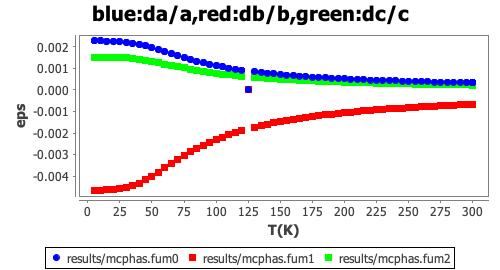
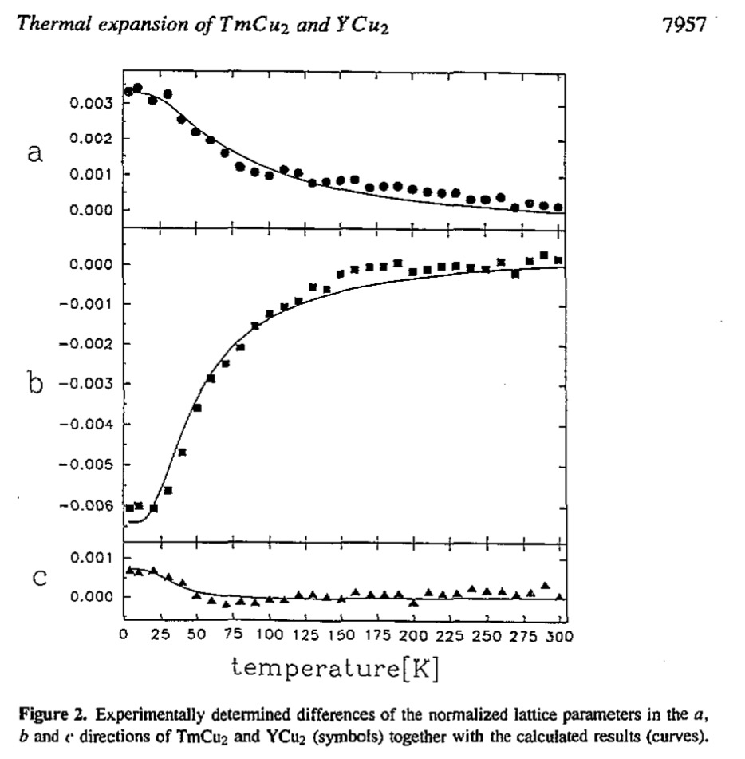
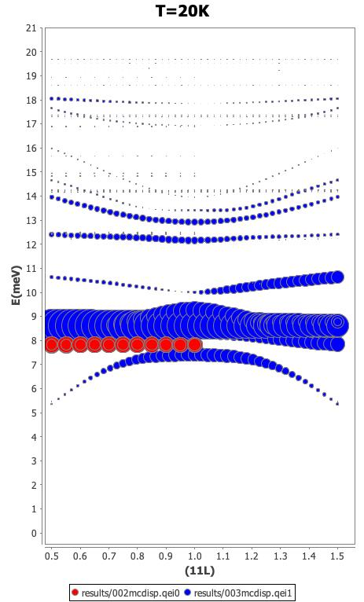

Next: Single Ion Modules Up: Crystal Field Phonon Interaction Previous: Magnetoelastic Options to mcphas Contents Index
 - magnetoelastic effects and Neutron Spectra calculated with CF-phonon interaction
- magnetoelastic effects and Neutron Spectra calculated with CF-phonon interaction
As an example for static and dynamic calculations including the crystal-field phonon interaction
we present a ”simple” calculation on TmCu, all input files (calc.bat
and logbook calc.pdf with all commands can be found in examples/tmcu2_cf_phonon.
”Simple” in this context means, that the input parameters are quite basic and not fine
tuned to match the experiment. As input we used for this orthorhombic system the
crystal structure (see TmCu2.cif), point charges
with a cutoff radius of 15 Å and
a distance dependent Born von Karman longitudinal spring model as output by default
from makenn -bvk.
|

|
|

|
With mcphas -doeps the static thermodynamic properties have been calculated, in particular the strain tensor. The computed crystal field contribution to the thermal expansion (fig. 21) is in good agreement with the experimental data from powder X-ray diffraction (fig. 22).
|

|
By using mcdisp at the temperature of 20 K the magnetic and nuclear inelastic neutron scattering cross section can be calculated. We show in fig. 23 the magnetic scattering along the (11L) direction. Including the crystal field phonon interaction clearly leads to a dynamic Jahn-Teller effect: the flat modes split, shift and get dispersive and there is considerable magnetic intensity transfer to phonons. Thus the double peak feature in unpublished experimental data on powder can possibly be interpreted, see fig. 24

|